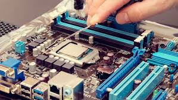

Estudios:
- Estudios de Maestria:Egresada de la Maestria de Gerencia Pública
- Estudios Superiores:Ingenieria en Informática y Sistemas
- Estudios Técnicos:Técnico en Electrónica
- Diplomado:Transformación Digital, Inteligencia de Negocios Power BI, Big Data...
Ingenieria en Informática y Sistemas

Técnico en Electrónica